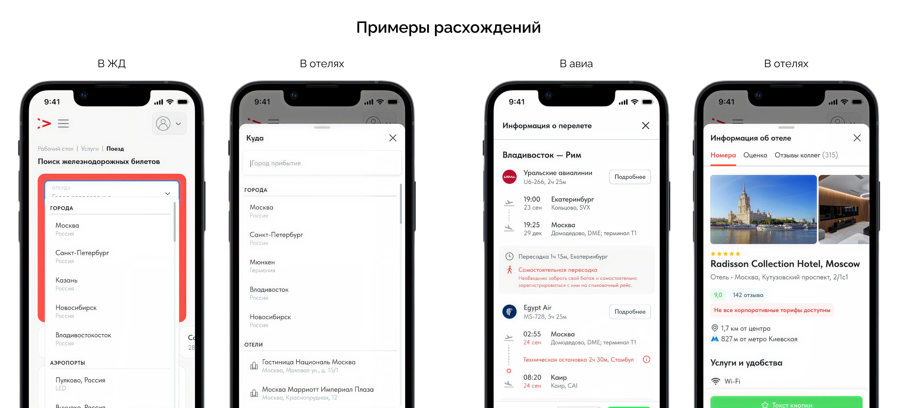
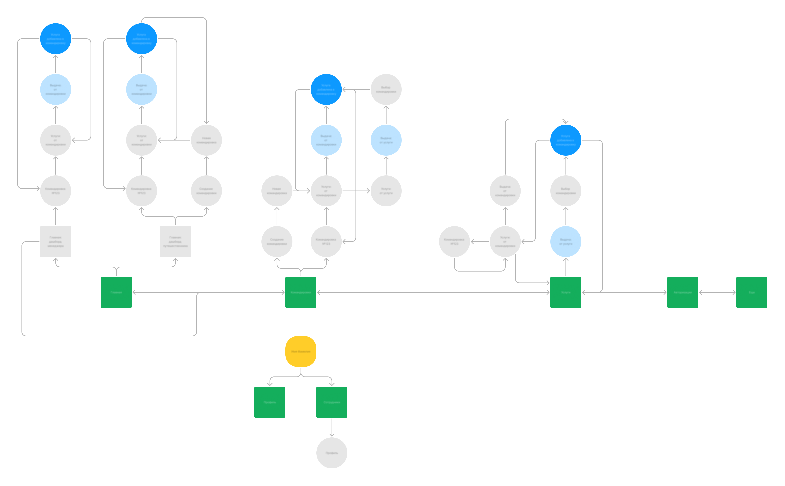
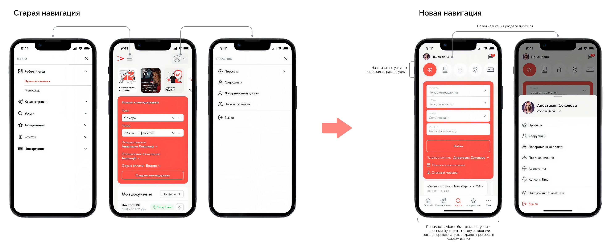
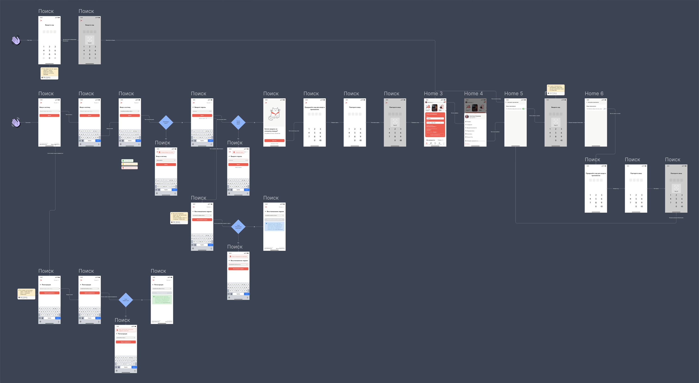
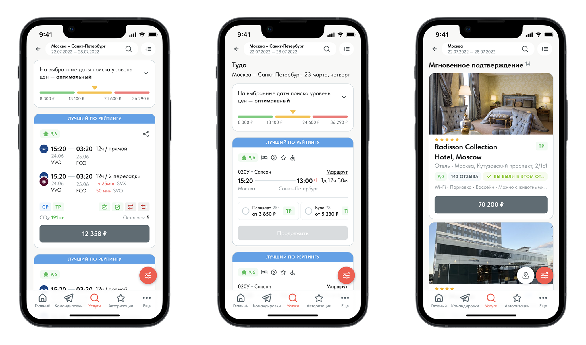

Aeroclub, 2024
Мобильное приложение
Переход от адаптивной веб версии к мобильному приложению
О компании
Группа компаний «Аэроклуб» — лидер российского рынка делового туризма, разработчик и поставщик IT-решений и сервисов для бизнеса, эксклюзивный партнер глобальной сети BCD Travel.
Моя роль
Как старшему дизайнеру продукта мне предстояло создать мобильного приложения, продумать ключевые паттерны, навигацию и адаптировать текущий дизайн продукта в вебе под мобильные паттерны. Работал в связке с продактом и мобильным разработчиком.
Бизнес цели
Усиление лояльности клиентов
Важной причиной разработки приложения стало укрепление репутации бренда — все крупные игроки рынка уже имеют мобильные приложения, которые обеспечивают удобство и современный подход к обслуживанию клиентов.
Производительность и функциональность
Мобильные приложения обычно работают быстрее, чем адаптивные веб-сайты, позволяют отправлять push-уведомления и работать в офлайн-режиме, что особенно важно в travel-индустрии.
Исследование и анализ
На старте проекта я провел анализ текущего состояния продукта. Во время глобального редизайна, мы обращали внимание на адаптив по остаточному принципу. Странно было бы делать редизайн, без адаптации под мобильные девайсы, но ресурсов, как на десктоп, не было. В том числе ухудшало ситуацию то, что у меня практически отсутствовал опыт работы с мобильными девайсами, поэтому выдавать сразу приличные мобильные интерфейсы не получалось. В процессе работы над каждым travel-сервисом я постепенно улучшал адаптивный дизайн, из-за чего в итоге каждый сервис получил свою, немного докрученную, версию адаптива.
{kind=link}

Первоочередной задачей стало приведение всех сервисов к единому стандарту мобильных интерфейсов, а также завершение доработки визуального стиля и обеспечение его единообразия.
Также требовалось переосмыслить навигацию в продукте, поскольку её основы, как и адаптивный дизайн, были заложены давно и не подходили в достаточной степени для создания современного мобильного приложения.
Поддержка одновременно двух версий мобильного дизайна, отдельно для приложения и отдельно для веба, так же казалось непосильной для нашей небольшой команды, в первую очередь с перспективы дизайн-отдела (из 2 человек). Поэтому я решил воспользоваться опытом ребят из других компаний и защитил перед коллегами идею о создании единого дизайна под приложение и веб.
Отдельное внимание необходимо уделить специфическим мобильным функциям, которых не хватало в текущей версии: актуальной системе авторизации, настройкам приложения (например: уведомление, вход по биометрии) и т.д.
Резюмируя:
- делаем удобную и понятную навигацию, с прицелом на нативный опыт мобильных приложений
- приводим все сервисы к консистентному актуальному дизайну
- дизайним уникальные мобильные экраны (такие как авторизации по биометрии)
За работу!
После первоначальной проработки навигации оказалось, что изначальное решение не срабатывает так, как планировалось. В моей голове был привычный паттерн переходов между экранами,, однако при проверке с мобильным разработчиком стало ясно, что в приложении такая логика работать не будет. Тогда я узнал о принципах мини-приложений и понял, что текущий подход необходимо полностью пересмотреть.
После доработки я подготовил новую схему навигации и согласовал её с мобильным разработчиком — всё выглядело корректно. Затем показал обновлённый вариант продакт-менеджеру: на адаптацию потребовалось около двух недель, и мы утвердили изменения.
{kind=link}

На финальном этапе пришлось частично пересобрать дизайн, сделав упор на модальные окна — это позволило сохранить лёгкость приложения и избежать лишней нагрузки. Из-за этого изменилась и общая логика навигации. Я задизайнил обновлённое меню, переходы и взаимодействия между страницами, после чего представил решения стейкхолдерам. Концепция была одобрена.
{kind=link}

После завершения работы над навигацией я перешёл к проектированию обновлённого процесса авторизации. Важно было создать современный и интуитивный сценарий входа в систему, учитывающий специфику мобильных устройств — вход по биометрии, сохранение сессии и возможность быстрой повторной авторизации.
{kind=link}

Финальным и самым длительным этапом стала работа над обновлением макетов сервисов. Требовалось пересобрать интерфейсы под новую навигацию, адаптировать существующие страницы и довести визуальную и UX-часть до полного единства.
{kind=link}

Результат
К сожалению, я покинул компанию до момента реализации проекта. Перед уходом нужно было оперативно привести все сервисы к единому мобильному дизайну, соответствующему современным требованиям. На это ушло около трёх недель интенсивной работы.
В результате объемной работы над мобильным приложением, я получил ценный опыт разработки под мобильные ОС, узнал много нового про то, как работают мобильные приложение под капотом и на практике применил свои знания, относительно паттернов взаимодействия в мобильных приложениях.
Позже я узнал, что команда успешно продолжила начатое — проект уверенно двигался к релизу приложения и постепенной миграции со старого веб-интерфейса в новый формат, приближенный к полноценному мобильному опыту.